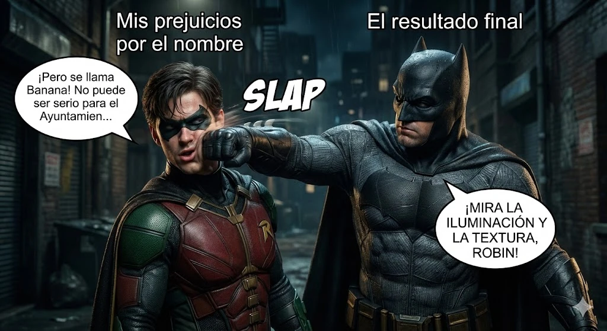

estrategIA #115 ·
El mismo prejuicio, otra imagen
El contexto
Esta segunda versión conserva la broma de Batman y Robin, pero cambia el dibujo de cómic por una escena de apariencia cinematográfica. Publicada junto a la anterior, permite apreciar dos tratamientos visuales de una misma idea.
Publicado en: estrategIA #115 — Diez usos estratégicos de Nano Banana Pro para comunicar políticas públicas, campañas y servicios
Leer el texto de la imagen
Mis prejuicios por el nombre El resultado final ¡Pero se llama Banana! No puede ser serio para el Ayuntamien... SLAP ¡MIRA LA ILUMINACIÓN Y LA TEXTURA, ROBIN!